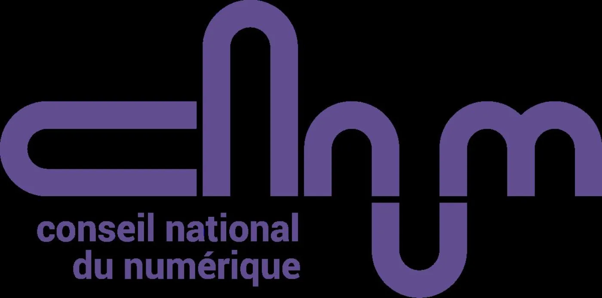
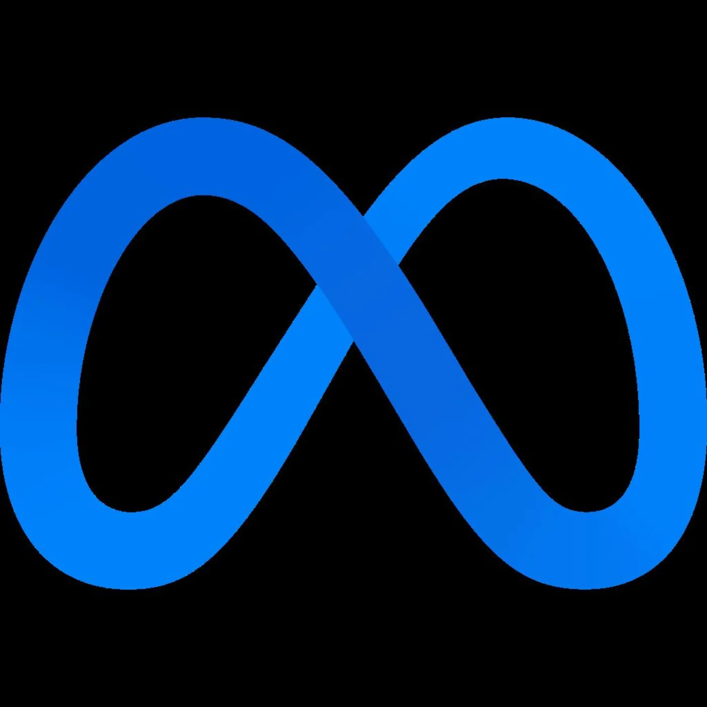

La consommation d'un modèle
Trois facteurs expliquent ce que coûte une requête en électricité.
Trois facteurs
Taille du modèle
En milliards de paramètres.
Longueur du texte
En jetons.
Architecture
Par exemple mélange d'experts (MoE) ou MatFormer.
La taille est traitée dans le support « La taille d'un modèle ». Ici, on regarde les deux autres.
Ce que fait la taille
Un paramètre est comme une « synapse » artificielle. Plus il y en a, plus il faut de puissance de calcul, donc d'électricité.
Un modèle plus grand n'est pas pour autant plus « intelligent ».

Conseil National du Numérique, « 20 cartes pour aborder l'impact énergétique de l'IA générative ».
Les jetons
Un jeton couvre une ou plusieurs lettres, selon leur fréquence d'apparition ensemble dans la langue.
« Salut »
1
jeton
« Salut, ça va ? »
5
jetons
Sur compar:IA, un jeton vaut à peu près quatre lettres.
À quoi servent les jetons
Découper
Le texte devient des morceaux que le modèle sait traiter.
Mesurer
Ils disent ce que le modèle peut traiter d'un coup.
Facturer
Le coût d'utilisation se compte au jeton, en entrée et en sortie.
Les mélanges d'experts
Plusieurs experts dans un même modèle, dont une poignée seulement travaille pour chaque jeton.
- Le jeton entre.
- Un routeur choisit les experts les plus adaptés.
- Seuls ceux-là calculent.
- La sortie part.
Avantages et limites
Avantages
- Moins de puissance de calcul nécessaire.
- Donc moins d'électricité consommée.
- Donc moins cher à utiliser.
Désavantages
- Prend beaucoup de place dans la mémoire de la machine.
- Plus complexe à développer.
- Peut moins bien généraliser.
Qui les utilise
Des modèles ouverts, bâtis en mélange d'experts.
DeepSeek/DeepSeek V3
Meta/Llama 4 Scout

Mistral/Mistral 8x7B en est un autre exemple.
Paramètres au total, paramètres actifs
Au total
671 mds
Tout doit tenir dans la mémoire de la machine.
Actifs par jeton
37 mds
Seuls ceux-là calculent, et dépensent de l'électricité.
La fiche d'un modèle ouvert en mélange d'experts porte la ligne « Dont N mds actifs ».
Comptes publiés par DeepSeek pour DeepSeek V3.
Ce que tout cela donne à l'écran
Taille, longueur du texte et architecture se résument en une énergie et une lettre, par million de jetons de sortie.
| Classe | Énergie |
|---|---|
| A | moins de 100 Wh |
| B | moins de 300 Wh |
| C | moins de 1 000 Wh |
| Classe | Énergie |
|---|---|
| D | moins de 3 000 Wh |
| E | moins de 10 000 Wh |
| F | 10 000 Wh et au-delà |
Seuils compar:IA, estimation EcoLogits 0.10.2, PUE 1,2, mix électrique mondial moyen.
Ce qu'il faut retenir
- Un gros modèle coûte plus cher à faire tourner qu'un petit, à texte égal.
- Une réponse longue coûte plus qu'une réponse courte : le compteur, ce sont les jetons.
- Un mélange d'experts n'active qu'une part de ses paramètres, et consomme donc moins que sa taille totale ne le laisse croire.
Le bilan de compar:IA affiche une énergie en mWh et une classe A–F. Ses équivalences sont en énergie.